CYSTS LIST
- Alexandrium catenella
- Alexandrium kutnerae
- Alexandrium margalefi
- Alexandrium minutum
- Alexandrium peruvianum
- Alexandrium pseudogoniaulax
- Alexandrium tamarense
- Alexandrium taylori
- Alexandrium spp.
- Archaeperidinium bailongense, cyst of
- Archaeperidinium constrictum, cyst of
- Archaeperidinium minutum, cyst of
- Archaeperidinium monospinum, cyst of
- Archaeperidinium saanichi, cyst of
- Archaeperidinium sp., cyst of
- Ataxiodinium choane
- Ataxiodinium confussum
- Ataxiodinium zevenboomii
- Ataxiodinium sp.
- Biecheleria baltica
- Biecheleria cincta
- Biecheleria sp.
- Bitectatodinium spongium
- Bitectatodinium tepikiense
- Bitectatodinium sp.
- Brigantedinium assymmetricum
- Brigantedinium auranteum
- Brigantedinium cariacoense
- Brigantedinium majusculum
- Brigantedinium simplex
- Brigantedinium sp.
- Caspidinium rugosum
- Cryodinium matsuokai
- Cryodinium sp.
- Cryodinium meridianum
- Dalella chathamensis
- Diplopelta symmetrica, cyst of
- Dubridinium caperatum, cyst of
- Dubridinium cassiculum, cyst of
- Dubridinium cavatum, cyst of
- Dubridinium ulsterum, cyst of
- Dubridinium spp., cyst of
- Echinidinium aculeatum
- Echinidinium bispiniformum
- Echinidinium delicatum
- Echinidinium karaense
- Echinidinium granulatum
- Echinidinium sleipnerensis
- Echinidinium transparantum
- Echinidinium zonneveldiae
- Gymnodinium catenatum, cyst of
- Gymnodinium inusitatum, cyst of
- Gymnodinium microreticulatum, cyst of
- Gymnodinium nolerii, cyst of
- Gymnodinium trapeziforme, cyst of
- Impagidinium aculeatum
- Impagidinium caspienense
- Impagidinium pallidum
- Impagidinium paradoxum
- Impagidinium patulum
- Impagidinium plicatum
- Impagidinium sphaericum
- Impagidinium strialatum
- Impagidinium variaseptum
- Impagidinium velorum
- Islandinium brevispinosum
- Islandinium? cezare
- Islandinium minutum
- Leipokatium invisitatum
- Lejeunecysta acuminate
- Lejeunecysta adeliensis
- Lejeunecysta attenuata
- Lejeunecysta beinenensis
- Lejeunecysta catomus
- Lejeunecysta communis
- Lejeunecysta cowiei
- Lejeunecysta epidoma
- Lejeunecysta fallax
- Lejeunecysta globosa
- Lejeunecysta granosa
- Lejeunecysta hyalina
- Lejeunecysta katatonos
- Lejeunecysta lata
- Lejeunecysta marieae
- Lejeunecysta oliva
- Lejeunecysta paratenella
- Lejeunecysta pulchra
- Lejeunecysta rotunda
- Lejeunecysta sabrina
- Lejeunecysta sp.
- Lingulodinium machaerophorum
- Nematosphaeropsis labyrinthus
- Nematosphaeropsis lemniscata
- Nematosphaeropsis rigida
- Nematosphaeropsis scala
- Nematosphaeropsis spp.
- Nia acanthocysta
- Oblea acathocysta, cyst of
- Operculodinium aguinawense
- Operculodinium centrocarpum
- Operculodinium israelianum
- Operculodinium janduchenei
- Operculodinium longispinigerum
- Operculodinium piaseckii
- Operculodinium tegillatum
- Operculodinium microtriainum
- Operculodinium sp.
- Pentapharsodinium dalei
- Peridinium ponticum
- Polykrikos kofoidii, cyst of
- Polykrikos schwartzii, cyst of
- Polykrikos hatmannii, cyst of
- Polykrikos quadratus, cyst of
- Polykrikos sp., cyst of
- Polysphaeridium zoharyi
- Protoperidinium americanum, cyst of
- Protoperidinium conicoides, cyst of
- Protoperidinium fukuyoi, cyst of
- Protoperidinium lewisiae, cyst of
- Protoperidinium monospinum, cyst of
- Protoperidinium parthenopes, cyst of
- Protoperidinium thulensense, cyst of
- Protoperidinium tricingulatum, cyst of
- Pyxidinopsis psilata
- Pyxidinopsis reticulata
- Qia_lebouriae
- Quinquecuspis concreta
- Scrippsiella acuminata
- Scrippsiella crystallina
- Scrippsiella erinaceus
- Scrippsiella spinifera
- Scrippsiella triffida
- Scrippsiella trochoidea
- Selenopemphix antarctica
- Selenopemphix armageddonensis
- Selenopemphix brevispinosum
- Selenopemphix brinkhuisii
- Selenopemphix conspicua
- Selenopemphix coronata
- Selenopemphix crenata
- Selenopemphix dionaeacysta
- Selenopemphix islandensis
- Selenopemphix nephroides
- Selenopemphix quanta
- Selenopemphix tholus
- Selenopemphix undulata
- Selenopemphix sp.
- Spiniferites alaskensis
- Spiniferites asperulus
- Spiniferites belerius
- Spiniferites bentorii
- Spiniferites cruciformis
- Spiniferites delicatus
- Spiniferites elongatus
- Spiniferites frigidus
- Spiniferites hainanensis
- Spiniferites hyperacanthus
- Spiniferites lazus
- Spiniferites ludhamensis
- Spiniferites membranaceus
- Spiniferites mirabilis
- Spiniferites multisphaerus
- Spiniferites pachydermus
- Spiniferites pacificus
- Spiniferites spinatus
- Spiniferites splendidus
- Spiniferites ramosus
- Stelladinium abei
- Stelladinium bifurcatum
- Stelladinium denticulatum
- Stelladinium reidii
- Stelladinium robustum
- Stelladinium stellatum
- Stelladinium spp.
- Tectatodinium pellitum
- Trinovantedinium applanatum
- Trinovantedinium ferugnomatum
- Trinovantedinium glorianum
- Trinovantedinium harpagonium
- Trinovantedinium pallidifulvum
- Trinovantedinium variabile
- Trinovantedinium sp.
- Tuberculodinium vancampoae
- Votadinium bengalensis
- Votadinium calvum
- Votadinium concavum
- Votadinium elongatum
- Votadinium nanhaiense
- Votadinium pontifossatum
- Votadinium psilodora
- Votadinium reidii
- Votadinium rhomboideum
- Votadinium spinosum
- Xandarodinium xanthum
IMPAGIDINIUM CASPIENENSE
Color: *Transparent.
Surface: *Finely granulated. **Sometimes with scattered granulare.
Shape: **Subspherical to ellipsoidal. Epicyst has a smooth rounded apex with an apical boss.
Central body: **34 to 39.4 um. (length including apical boss).
Process length: -
Process: -
Archeopyle: **Precingular.
Paratabulation: *Intratabular ridges present. **Expressed by the sutural septa.
Septa: *Variable height. Cavate septa. Smooth. **Low height (1.3 to 2.4 um.), except around the antapical plate 1", where the septa is higher (2.3 to 4.3 um.).
Sulcus: -
Distiguishing characteristics: -
DESCRIPTION:
The cyst is proximate with subspherical to ellipsoidal ambitus (Fig. 2I). The epicyst has a smooth rounded apex with an apical boss of 0.5–1.1 lm in height (mean: 1.1 lm, n = 7) formed by the apical pore complex (apc) (Fig. 2F, L). Tegillum and luxuria are closely appressed, except along the sutural septa where they are separated (Fig. 2C). The height of the sutural septa is low (1.3–2.4 lm, mean: 1.9 lm, n = 27), except around the antapical plate 10000 where the septa are higher (2.3–4.3 lm, mean: 3.4 lm, n = 6 9 3) (Fig. 2I, K). The tabulation expressed by the sutural septa delineates a gonyaulacacean tabulation, and is identical to the tabulation expressed by the theca. The cingulum does not overlap, and the displacement is by 2.5–2.7 widths. The sulcal tabulation is expressed, showing five sulcal plates as mentioned for the theca (Fig. 2D, E). These are the large anterior sulcal plate (as), which is hook-shaped (Fig. 2D), the broad posterior sulcal plate (ps), which is not as high as wide (Fig. 2E), the right accessory sulcal plate (ras), the right sulcal plate (rs), and the left sulcal plate (ls) (Fig. 2D). The presence of the pore on 40 and the flagellar pore could also be observed (resp. Fig. 2A, D). The archeopyle is precingular; in the culture, the plate often remained attached (Fig. 2A, G). The torsion is neutral (Fig. 2G). The wall texture is finely granulate, sometimes with scattered granules and has low intratabular suturo-cavate relief on the plates. When cell contents are still present, a red body is recognizable (Fig. 2J–L).(Extracted from Mertens et al., 2017).
IMAGES:
| 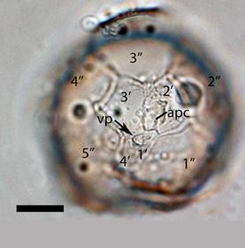1 | 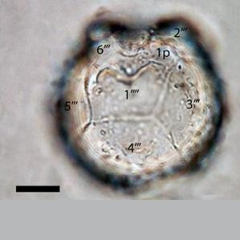2 | 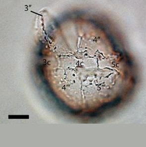3 |
| 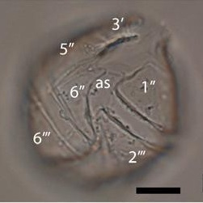4 | 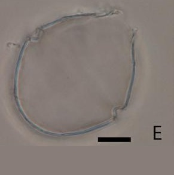5 | 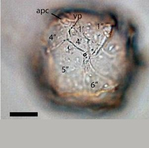6 |
| 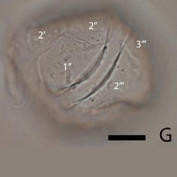7 | 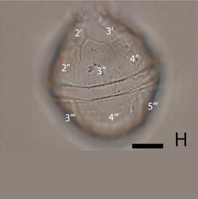8 | 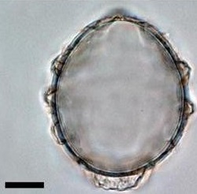9 |
| 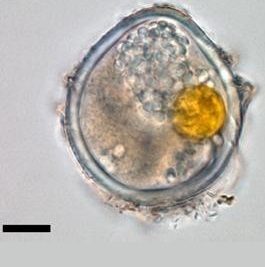10 | 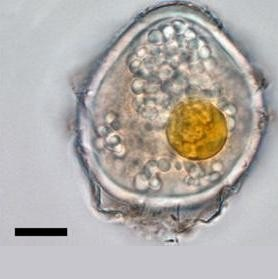11 | 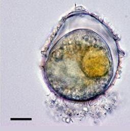12 |
IMAGES REFERENCE:
1. Impagidinium caspienense. Light micrographs. Cyst stage related to the motile stage. Apical view of apicyst showing opened operculum (corresponding to 3"). Arrow marks ventral pore on 4 (vp). Scale bar: 10 um. (Mertens et al., 2017 - Figure 2-A).
2. Impagidinium caspienense. Light micrographs. Cyst stage related to the motile stage. Antapical view of hypocyst. Scale bar: 10 um. (Mertens et al., 2017 - Figure 2-B).
3. Impagidinium caspienense. Light micrographs. Cyst stage related to the motile stage. Dorsal view showing opened operculum (corresponding to 3") arrows marks ventral pore on 4 (vp). Scale bar: 10 um. (Mertens et al., 2017 - Figure 2-C).
4. Impagidinium caspienense. Light micrographs. Cyst stage related to the motile stage. Ventral view. Scale bar: 10 um. (Mertens et al., 2017 - Figure 2-D).
5. Impagidinium caspienense. Light micrographs. Cyst stage related to the motile stage. Ventral view showing some of the sulcal plates and the cingular displacement. Scale bar: 10 um. (Mertens et al., 2017 - Figure 2-E).
6. Impagidinium caspienense. Light micrographs. Cyst stage related to the motile stage. Ventral view showing some of the sulcal plates and the cingular displacement. Scale bar: 10 um. (Mertens et al., 2017 - Figure 2-F).
7. Impagidinium caspienense. Light micrographs. Cyst stage related to the motile stage. Dorsal view. Scale bar: 10 um. (Mertens et al., 2017 - Figure 2-G).
8. Impagidinium caspienense. Light micrographs. Cyst stage related to the motile stage. Lateral right view. Scale bar: 10 um. (Mertens et al., 2017 - Figure 2-H).
9. Impagidinium caspienense. Light micrographs. Cyst stage related to the motile stage. Other specimen. Optical section showing ambitus. Scale bar: 10 um. (Mertens et al., 2017 - Figure 2-I).
10. Impagidinium caspienense. Light micrographs. Cyst stage related to the motile stage. Optical section of cysts will cell contents isolated from sediment showing orange inclusion and lipid droplets. Scale bar: 10 um. (Mertens et al., 2017 - Figure 2-J).
11. Impagidinium caspienense. Light micrographs. Cyst stage related to the motile stage. Optical section of cysts will cell contents isolated from sediment showing orange inclusion and lipid droplets. Scale bar: 10 um. (Mertens et al., 2017 - Figure 2-K).
12. Impagidinium caspienense. Light micrographs. Cyst stage related to the motile stage. Longitudinal optical section of cyst with cell content used for single-cyst-PCR. Scale bar: 10 um. (Mertens et al., 2017 - Figure 2-L).
BIBLIOGRAPHY:
- Mertens, K. N., Takano, Y., Gu, H., Bagheri, S., Pospelova, V., Pieńkowski, A. J., ... & Matsuoka, K. (2017). Cyst‐Theca Relationship and Phylogenetic Position of Impagidinium caspienense Incubated from Caspian Sea Surface Sediments: Relation to Gonyaulax baltica and Evidence for Heterospory within Gonyaulacoid Dinoflagellates. Journal of Eukaryotic Microbiology, 64(6), 829-842. (**)
- Zonneveld, K. A., & Pospelova, V. (2015). A determination key for modern dinoflagellate cysts. Palynology, 39(3), 387-409. (*)